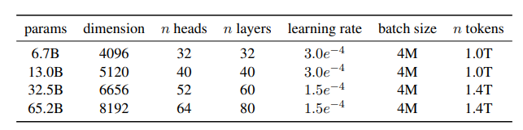

Los modelos de lenguaje grandes, como GPT-4, han mostrado un rendimiento impresionante en una amplia gama de tareas de procesamiento del lenguaje natural (NLP) y han transformado la forma en que las aplicaciones basadas en inteligencia artificial interactúan con los datos y las personas. Estos modelos de lenguaje, entrenados con enfoques de aprendizaje supervisado y auto-supervisado, han demostrado su capacidad para generar texto coherente y realizar razonamiento de sentido común, traducción automática, resumen de texto, generación de código y muchas otras tareas.
A pesar del éxito de los modelos de lenguaje grandes, tienen limitaciones importantes. En primer lugar, su adaptabilidad en tiempo real es limitada, ya que requieren una cantidad significativa de datos y tiempo de entrenamiento para aprender y ajustarse a nuevas tareas. También, con el crecimiento del tamaño de los modelos es cada vez más difícil la ejecución de los mismos en cuanto a tiempos de cómputo. Además, la mayoría de los modelos de lenguaje de gran escala son de código cerrado, lo que dificulta la investigación y la colaboración en la comunidad científica.
Objetivos
LLaMA (Large Language Model Meta AI) es un conjunto de modelos de lenguaje desarrollado para abordar las limitaciones de los modelos de lenguaje grandes actuales. Esto lo hace a través de dos características principales:
Datasets abiertos: para el entrenamiento de los modelos solo se utilizan datos accesibles al público, ayudando a democratizar el acceso y estudio de los LLMs, y haciéndolo compatible con open-sourcing.
Optimización de los modelos en función del inference budget: en vez de buscar construir un modelo de gran tamaño para obtener mejores resultados, LLaMA se concentra en entrenar modelos más pequeños con más datos. De esta forma se pueden obtener resultados similares reduciendo notablemente el inference budget, tanto en memoria como tiempo de ejecución. Como comparación, el modelo GPT-3 posee 175 mil millones de parámetros, suponiendo alrededor de 700GB en memoria RAM solo para almacenar la configuración de la red. El modelo más grande propuesto por LLaMA solo posee 65 mil millones de parámetros.
Contexto actual
LLM
Los Modelos de Lenguaje a Gran Escala (LLMs) han experimentado un avance significativo en los últimos años, gracias a los avances en arquitecturas de redes neuronales y al aumento de la capacidad de cómputo. Estos modelos, como GPT-4, son capaces de generar texto de alta calidad y han demostrado un rendimiento impresionante en diversas tareas de procesamiento del lenguaje natural (NLP). Sin embargo, también enfrentan limitaciones importantes en términos de adaptabilidad en tiempo real y generalización a partir de pocas muestras.
La adaptabilidad en tiempo real se refiere a la capacidad de un modelo para ajustarse rápidamente a nuevas tareas o dominios de conocimiento sin necesidad de un extenso proceso de reentrenamiento. Por otro lado, la generalización a partir de pocas muestras se refiere a la capacidad de un modelo para aprender y realizar predicciones precisas con un número limitado de ejemplos de entrenamiento. Estas dos características son fundamentales para el desarrollo de aplicaciones de inteligencia artificial más eficientes y eficaces en una amplia gama de dominios.
Instruction tuning
El ajuste de instrucción es una técnica que permite adaptar los modelos de lenguaje a gran escala a nuevas tareas utilizando un enfoque de aprendizaje más rápido y eficiente. En lugar de reentrenar el modelo desde cero, el modelo se "entrena" a través de instrucciones en lenguaje natural. Estas instrucciones pueden incluir información sobre la tarea a realizar, la estructura de los datos de entrada y salida, y las restricciones o preferencias específicas del dominio.
El ajuste de instrucción puede mejorar la adaptabilidad en tiempo real de los modelos de lenguaje, permitiendo que aprendan y se ajusten a nuevas tareas de manera más rápida y con menos datos de entrenamiento. También puede mejorar la generalización a partir de pocas muestras, ya que el modelo puede utilizar su conocimiento previo para aprender rápidamente a partir de un conjunto limitado de ejemplos.
Closed source LLMs
La mayoría de los modelos de lenguaje a gran escala actuales, incluidos GPT-4 y otros, son de código cerrado, lo que significa que el código fuente y los detalles de implementación no están disponibles para la comunidad de investigadores. Esto limita la capacidad de los científicos para estudiar, comprender y mejorar estos modelos , y también dificulta la colaboración y el intercambio de conocimientos en la comunidad científica. El código cerrado también puede limitar la transparencia y la responsabilidad en la investigación en inteligencia artificial, lo que puede conducir a preocupaciones éticas y de privacidad.
LLaMA, en cambio, tiene como objetivo ser un modelo de código abierto, proporcionando acceso al código fuente y a los detalles de implementación a la comunidad de investigadores. Al hacerlo, fomenta la colaboración, la innovación y el desarrollo de aplicaciones basadas en inteligencia artificial más responsables y éticas. La apertura de LLaMA también puede impulsar la investigación en metaprendizaje y ajuste de instrucción, permitiendo a los científicos explorar nuevas técnicas y enfoques para mejorar la adaptabilidad y la generalización de los modelos de lenguaje a gran escala.
LLaMA: Arquitectura y componentes
Dataset
Una de las principales características de LLaMA es que su entrenamiento se limita a fuentes de datos públicas compatibles con "open sourcing". El conjunto de datos está compuesto por las siguientes fuentes:
English CommonCrawl (67%): repositorio abierto que contiene información obtenida a través de web crawling. De esta fuente se utilizan datos de 2017 a 2020, y son procesados con el pipeline CCNet. Con este procesado se eliminan duplicados a nivel de línea, se realiza identificación de idioma utilizando clasificadores para eliminar contenido no inglés y se filtra el contenido de baja calidad usando modelos de n-gramas.
C4 (15%): dataset ya pre-procesado basado también en CommonCrawl. El procesado es similar al realizado para el anterior dataset con CCNet, pero esta vez el filtrado de calidad se realiza utilizando heurísticas.
Github (4.5%): dataset abierto de Google BigQuery. Para mantenerse en línea con el uso de solo datos accesibles públicamente, solo se utilizan proyectos bajo las licencias de Apache, BSD y MIT. En este caso se eliminan los duplicados a nivel de archivo y el filtrado de calidad se realiza usando heurísticas. También se eliminan partes estructurales de los archivos que no proporcionan información relevante como los headers.
Wikipedia (4.5%): dumps de Wikipedia del periodo Junio-Agosto de 2022, en más de 20 idiomas. Para estandarizar el formato, se eliminan los hyperlinks, comentarios, etc.
Gutenberg y Books3 (4.5%): ambos datasets relacionados con libros disponibles en el dominio público. Los duplicados son eliminados a nivel de libro si existe más de un 90% de coincidencia entre ellos.
ArXiv (2.5%): archivos LaTeX de contenido científico. En el proceso de estandarización se elimina todo antes de la primera sección y la bibliografía, además de los comentarios, definiciones y macros utilizados por el autor.
Stack Exchange (2%): conjuntos de preguntas y respuestas en las 28 páginas más grandes. En la estandarización se elimina toda lo relacionado con el HTML de la página y además se ordenan las preguntas por puntuación.
Una vez se han procesado y estandarizado todos los textos, estos son tokenizados utilizando una modificación del algoritmo de compresión byte-pair encoding (BPE). Con esto se consigue que las palabras más comunes en el vocabulario sean representadas con un solo token, mientras que las palabras menos comunes estarán compuestas por dos o más tokens.
Arquitectura
Al igual que la mayoría de los grandes modelos de lenguaje actuales, la arquitectura de LLaMA se basa en un transformador. Los transformadores siguen una estructura de encoder-decoder autoregresivo, es decir, que su propia salida como entrada. En el encoder, cada capa se divide en dos subcapas, la primera relacionada con el mecanismo de atención y la segunda siendo una simple red feed-forward completamente conectada. El decoder es idéntico, pero posee una subcapa adicional relacionada también con la atención del modelo. A esta arquitectura original se le aplican varias modificaciones para optimizarla, proviententes de distintos origenes:
Pre-normalización (GPT3): en vez de normalizar la salida, se normalizan las entradas de cada sub-capa del transformador.
SwiGLU (PaLM): la función de activación ReLU se sustituye por la SwiGLU, para mejorar el rendimiento de la red.
Embeddings rotatorios (GPTNeo): los embeddings de posición absoluta propuestos en la arquitectura original se sustituyen por Rotary Positional Embeddings (RoPE) en cada capa de la red.

Fig. 1: Modelos disponibles de LLaMA.
Implementación
Para el entrenamiento del modelo se hace uso del optimizador AdamW, junto con un cosine learning rate schedule. Esto hace que la tasa de aprendizaje pase de muy alta a muy baja rápidamente a medida que avanzan los epochs, para así volver a un valor alto. Este proceso se va repitiendo periódicamente. Se hace también uso de otras técnicas como el weight decay, gradient clipping y warmup steps.
En cuanto al software desarrollado para el entrenamiento del modelo, se hace uso de distintas técnicas para hacer la implementación más eficiente. Una de ellas es utilizar una implementación muy eficiente de la multi-head attention, que reduce tanto el uso de memoria como el tiempo de ejecución. También se reducen el número de activaciones calculadas durante el backward pass con el uso de checkpointing. Con esto, se evita siempre que se pueda calcular las activaciones más computacionalmente costosas. Por último se intenta solapar también el cálculo de las activaciones con las comunicaciones entre las GPUs.
Evaluación experimental
Métricas de evaluación
Como es común en la evaluación de modelos de lenguaje, los resultados se obtuvieron realizando tanto zero-shot learning como few-shot learning. En zero-shot, se proporciona al modelo una descripción de la tarea y un ejemplo de test. El modelo debe entonces proporcionar una respuesta u ordenar las respuestas proporcionadas, dependiendo de la tarea. Few-shot es muy parecido, pero se le proporciona también al modelo algunos ejemplos de la tarea.
Estas métricas proporcionan una evaluación cuantitativa del rendimiento de LLaMA en diversas tareas y dominios, y permiten comparaciones con otros modelos de lenguaje a gran escala.
Resultados y comparaciones
El modelo se evaluó siguiendo una gran variedad de tareas y problemas, y se comparó con los modelos de lenguaje más prominentes como GPT-3, Gopher, Chinchilla o PaLM. A continuación se listan todas las pruebas.
Razonamiento de Sentido Común
Se utilizaron benchmarks de BoolQ, PIQA, SIQA, HellaSwag, WinoGrande, ARC y OpenBookQA. Incluyen tanto tareas como preguntas multi-repuesta.
Fig. 2: Resultados en tareas de Razonamiento de Sentido Común.
LLaMA consigue el mejor rendimiento en zero-shot en todos los benchmarks excepto BoolQ y WinoGrande, solo perdiendo contra PaLM-540B. Consistentemente consigue resultados mejores que otros modelos de considerablemente mayor tamaño como GPT-3 (175B) o Gopher-280B.
Preguntas a Libro Cerrado
Se utilizaron benchmarks de NaturalQuestions y TriviaQA. Al ser preguntas a libro cerrado, los modelos no tienen acceso a documentos que contengan evidencia de las respuestas a las preguntas.
Fig. 3: Resultados en NaturalQuestion.Fig. 4: Resultados en TriviaQA.
En ambos benchmarks, LLaMA supera al resto de modelos. Cabe destacar también que incluso LLaMA-13B consigue resultados al nivel del estado del arte, pese a ser 5-10x más pequeño.
Comprensión Lectora
Se utilizaron benchmarks de RACE, que contiene preguntas de comprensión lectora para alumnos de instituto.
Fig. 5: Resultados en Comprensión Lectora.
En este benchmark LLaMA-65B es competitivo con PaLM-540B, obteniendo resultados similares. Además, LLaMA-13B consigue superar a GPT-3 en ambas pruebas.
Razonamiento Matemático
Se utilizaron benchmarks de MATH y GSM8k, que contienen preguntas de razonamiento matemático orientadas a alumnos de instituto.
Fig. 6: Resultados en Razonamiento Matemático.
En este caso los resultados se comparan también con Minerva, una serie de modelos PaLM que han sido ajustados (finetuned) en datos matemáticos. LLaMA-65B es capaz de obtener notablemente mejores resultados que PaLM-62B e incluso superar a Minerva-62B en GSM8k usando maj1@k (evaluaciones con majority voting).
Generación de Código
Se utilizaron benchmarks de HumanEval y MBPP. En estas tareas el modelo recibe una descripción del programa a realizar y ejemplos de entradas y salidas del programa. El modelo tiene entonces que generar código Python que pase todos los casos de test del problema.
Fig. 7: Resultados en Generación de Código.
De nuevo, LLaMA es capaz de superar a otros modelos de mucho mayor tamaño en casi todas las pruebas.
Massive Multitask Language Understanding (MMLU)
El benchmark MMLU contiene conjuntos de preguntas multi-respuesta sobre una variedad de temas.
Fig. 8: Resultados en MMLU.
Para este benchmark, LLaMA se queda notablemente por detrás de los mejores modelos, PaLM-540B y Chinchilla-70B. Esta diferencia se puede atribuir al dataset de entrenamiento de LLaMA, que contiene ejemplos limitados de libros relacionados con la ciencia y artículos académicos. Gopher, Chinchilla y PaLM, en cambio, utilizan un conjunto mucho más extenso de estos. Aún así, los resultados obtenidos por LLaMA en comparación a modelos de similar tamaño e incluso mayor como GPT-3 y Gopher son considerablmente mejores.
En este benchmark también se evaluó la utilidad del instruction finetuning, comparando los resultados antes y después del uso de dicha técnica.
Fig. 9: Resultados en MMLU con Instruction Finetuning.
Los resultados obtenidos en la evaluación experimental de LLaMA no solo destacan el potencial del modelo en una amplia variedad de aplicaciones, sino que también proporcionan información valiosa sobre las áreas en las que se pueden realizar mejoras futuras. Al analizar el rendimiento de LLaMA en diferentes tareas y dominios, los investigadores pueden identificar las limitaciones del modelo y desarrollar enfoques innovadores para abordar estas limitaciones y mejorar aún más el rendimiento de LLaMA en el futuro.
Otras consideraciones
Bias, Toxicidad y Desinformación
Debido a que gran parte del contenido de entrenamiento del modelo se obtiene de la Web, se evaluó también usando métricas de generación de contenido tóxico y detección de estereotipos para poder observar el posible daño que podría causar el modelo.
RealToxicityPrompts
Este benchmark contiene alrededor de 100k prompts que deben ser completadas por el modelo. Las respuestas son evaluadas entonces con un toxicity score a través de PerspectiveAPI, una plataforma que usa machine learning para la deteción de comentarios y contenido tóxico.
Fig. 10: Resultados en RealToxicityPrompts.
En este caso, la columna "Respectful" hace referencia a prompts que indican al modelo que complete las frases de forma educada y con respeto, mientras que en "Basic" los prompts no tenían esta indicación. Los resultados están en un rango de 0 (no tóxico) a 1 (tóxico). Los resultados obtenidos por los modelos son similares a los que se pueden ver en la literatura. Cabe destacar que el modelo con mayor número de parámetros es el que tiende a generar más toxicidad en sus respuestas.
CrowS-Pairs
Este dataset permite evaluar el sesgo del modelo en diversas categorías: género, religión, raza, orientación sexual, edad, nacionalidad, discapacidad, apariencia física y estatus socioeconómico. Para ello cada ejemplo tiene opción estereotípica y otra anti-estereotípica, y se evalua la preferencia del modelo por la primera.
Fig. 11: Resultados en CrowS-Pairs.
En este benchmark, LLaMA obtiene mejores resultados que ambos modelos de media, siendo claramente superior en las categorías de raza y discapacidad. Aún así, parece mostrar problemas especialmente en la categoría de religión.
WinoGender
Este benchmark se centra en evaluar el sesgo del modelo en la categoría de género. Para evaluarlo, los ejemplos están compuestos por frases con una profesión, un participante y un pronombre de un género determinado. Esto se le proporciona al modelo y se le solicita que identifique a cuál de las dos personas se refiere el pronombre.
Fig. 12: Resultados en WinoGender.
Al igual que otros modelos, LLaMA obtiene mejores resultados para la categoría de pronombres neutros their/them/someone comparado con las otras dos, indicando un sesgo de género. Esto está causado probablemente por la inferencia del modelo, que utiliza el género mayoritario en las profesiones para elaborar sus respuestas. Esto se confirma en los ejemplos de "gotcha", que son ejemplos en los que el pronombre no coincide con el género mayoritario de la profesión.
TruthfulQA
Con este benchmark se evalua la capacidad del modelo de detección de desinformación, comprobando su capacidad para determinar si algo es verdadero o no.
Fig. 12: Resultados en TruthfulQA.
Aunque los resultados obtenidos son mejores que GPT-3, siguen siendo muy bajos. Esto indica que el modelo es muy propenso a "alucinar" respuestas como verdaderas cuando no lo son.
Huella de Carbono
Debido al tamaño y la cantidad de energía utilizada durante el entrenamiento de estos grandes modelos de inteligencia artificial, la huella de carbono es cada vez un aspecto más relevante en la evaluación de estos modelos. En el caso de los modelos LLaMA, se estima que las emisiones causadas por el entrenamiento son equivalentes a 1015 tC02eq (toneladas de carbono emitido).
Fig. 13: Comparación de huella de carbono para el entrenamiento de distintos modelos.
En la comparación con otros modelos se pueda apreciar como el entrenamiento con una mayor cantidad de datos provoca que LLaMA-65B genere emisiones equiparables a modelos mucho más grandes.
Aplicaciones
Aplicación en robótica
LLaMA tiene un gran potencial en el campo de la robótica, donde su capacidad para adaptarse rápidamente a nuevas tareas y dominios puede ser de gran utilidad. Al integrar LLaMA en sistemas robóticos, es posible mejorar la interacción humano-robot y permitir que los robots comprendan y respondan de manera más efectiva a las instrucciones dadas por los usuarios humanos.
Además, la capacidad de LLaMA para aprender a partir de pocas muestras puede ser especialmente útil en aplicaciones robóticas, donde los datos de entrenamiento pueden ser limitados o difíciles de obtener. Esto permite que los robots aprendan nuevas habilidades y se adapten a diferentes entornos con un mínimo de datos de entrenamiento, lo que aumenta su eficiencia y versatilidad.
Algunos ejemplos de aplicaciones de LLaMA en robótica incluyen la navegación autónoma, el control de manipuladores robóticos, la interpretación de señales y gestos humanos, y la realización de tareas de cooperación entre robots y humanos.
Aplicación en salud (ChatDoctor)
LLaMA también tiene aplicaciones prometedoras en el campo de la salud, donde su capacidad para generar respuestas precisas y coherentes puede ser útil en la creación de sistemas de asesoramiento médico basados en inteligencia artificial, como ChatDoctor. Estos sistemas pueden proporcionar información médica precisa y personalizada a los usuarios, ayudándoles a tomar decisiones informadas sobre su salud y bienestar.
Al utilizar LLaMA en aplicaciones de salud, es posible desarrollar sistemas que comprendan y respondan a las preocupaciones y preguntas de los usuarios de manera efectiva, proporcionando información médica relevante y actualizada. Además, LLaMA puede ser utilizado para identificar y recomendar recursos médicos adicionales, como artículos de investigación y guías de tratamiento, en función de las necesidades y preferencias del usuario.
Es importante destacar que, aunque LLaMA puede proporcionar información médica valiosa, no debe considerarse un sustituto de la atención médica profesional. En su lugar, puede servir como una herramienta de apoyo para ayudar a los usuarios a tomar decisiones informadas y a obtener información adicional sobre su salud.
Aplicación en enseñanza
La capacidad de LLaMA para adaptarse rápidamente a nuevas tareas y generar respuestas precisas y coherentes también lo convierte en una herramienta valiosa en el ámbito de la enseñanza. Al integrar LLaMA en sistemas de enseñanza y aprendizaje en línea, es posible crear entornos de aprendizaje personalizados y adaptativos que se ajusten a las necesidades y preferencias individuales de cada estudiante.
Por ejemplo, LLaMA puede ser utilizado para desarrollar tutores inteligentes que proporcionen retroalimentación y orientación específicas a los estudiantes en función de sus habilidades y conocimientos actuales. Estos tutores pueden identificar áreas en las que los estudiantes pueden necesitar más ayuda y proporcionar recursos de aprendizaje adicionales para abordar estas deficiencias. Además, LLaMA puede ser utilizado para generar ejercicios y problemas personalizados que desafíen a los estudiantes y les ayuden a mejorar sus habilidades y conocimientos.
Otra aplicación potencial de LLaMA en la enseñanza es la creación de sistemas de evaluación inteligente que puedan analizar y evaluar las respuestas de los estudiantes de manera más efectiva y justa que los métodos tradicionales. Esto podría mejorar la calidad de la retroalimentación proporcionada a los estudiantes y ayudar a los educadores a identificar y abordar las áreas en las que los estudiantes pueden necesitar más apoyo.
Aplicación en vida cotidiana
LLaMA también puede ser utilizado en una amplia variedad de aplicaciones cotidianas, donde su capacidad para proporcionar respuestas precisas y coherentes puede mejorar la experiencia del usuario y facilitar la interacción con sistemas basados en inteligencia artificial.
Algunos ejemplos de aplicaciones de LLaMA en la vida cotidiana incluyen asistentes virtuales, sistemas de recomendación personalizados y herramientas de búsqueda mejoradas. Estos sistemas pueden beneficiarse de la capacidad de LLaMA para comprender y responder a las preguntas e instrucciones de los usuarios de manera efectiva, proporcionando información y recursos relevantes en función de las necesidades y preferencias del usuario.
Además, la capacidad de LLaMA para aprender a partir de pocas muestras puede ser útil en aplicaciones donde los datos de entrenamiento son limitados o difíciles de obtener, como la identificación y clasificación de objetos en entornos poco comunes o la generación de respuestas en idiomas menos comunes. Esto puede mejorar la utilidad y accesibilidad de los sistemas basados en inteligencia artificial en una amplia gama de contextos y situaciones.
Conclusiones y trabajos futuros
Limitaciones y posibles mejoras
A pesar de las ventajas y el potencial de LLaMA, el modelo presenta ciertas limitaciones que pueden abordarse en trabajos futuros. Una de las limitaciones es su dependencia de la calidad del conjunto de datos de entrenamiento, como sucede con todos los modelos de inteligencia artificial. Si las instrucciones no son claras o ambiguas, LLaMA puede generar respuestas incoherentes o incorrectas. Para abordar esta limitación, se podrían desarrollar mejores estrategias de preprocesamiento y curación de datos para garantizar que las instrucciones sean claras y específicas.
Otra limitación es la escalabilidad del modelo, ya que el entrenamiento de LLaMA en grandes conjuntos de datos puede ser computacionalmente costoso. Investigaciones futuras podrían explorar técnicas de optimización y reducción de la complejidad del modelo para mejorar la eficiencia y permitir su aplicación en una gama más amplia de dominios y tareas.
Además, aunque LLaMA ha demostrado ser efectivo en una variedad de tareas y aplicaciones, aún hay margen para mejorar su rendimiento en ciertas áreas. Por ejemplo, LLaMA podría beneficiarse de la incorporación de conocimientos específicos del dominio o de la capacidad de razonar sobre información contextual para generar respuestas más precisas y coherentes en situaciones específicas.
Open Source LLMs
La investigación y el desarrollo de LLaMA y otros modelos de lenguaje de gran escala han sido impulsados en gran medida por la comunidad de código abierto. Los modelos y herramientas de código abierto permiten a los investigadores y desarrolladores de todo el mundo colaborar y compartir conocimientos, lo que acelera el progreso en el campo de la inteligencia artificial.
A medida que la investigación en LLMs avanza, es crucial mantener un enfoque en la colaboración y el intercambio de conocimientos a través de proyectos de código abierto. Esto permitirá a los investigadores abordar de manera más efectiva las limitaciones y desafíos asociados con los LLMs y desarrollar soluciones innovadoras que beneficien a una amplia gama de aplicaciones y usuarios.
Direcciones futuras de investigación
La investigación en LLaMA y otros modelos de lenguaje de gran escala está en constante evolución, y hay varias direcciones prometedoras para trabajos futuros. Algunas áreas potenciales de investigación incluyen la mejora de la eficiencia y escalabilidad de los modelos, la incorporación de conocimientos específicos del dominio y la capacidad de razonamiento, y la investigación de enfoques más avanzados para la adaptación y el aprendizaje a partir de pocas muestras.
Además, es importante investigar y desarrollar estrategias para garantizar la seguridad y la privacidad de los modelos de lenguaje de gran escala, especialmente en aplicaciones sensibles como la atención médica y la enseñanza. Esto podría incluir la investigación de enfoques de privacidad diferencial y técnicas de seguridad federadas para proteger la información de los usuarios y garantizar que los modelos sean utilizados de manera responsable y ética.
Por último, es fundamental explorar el impacto social y ético de LLaMA y otros modelos de lenguaje de gran escala en diversos contextos y aplicaciones. Esto incluye investigar cómo estos modelos pueden perpetuar sesgos y desigualdades existentes y desarrollar estrategias para mitigar estos efectos y garantizar que los beneficios de la inteligencia artificial sean accesibles y equitativos para todos.
Preguntas
1. ¿Qué es LLaMA (Large Language Model Meta AI)?
LLaMA es una colección de modelos de lenguaje de gran escala desarrollado por Meta. LLaMA presenta varias características principales, como el uso de únicamente datos abiertos al público y la optimización del modelo en función de un inference budget para reducir su tamaño.
2. ¿Cuál es la principal diferencia entre LLaMA y otros modelos de lenguaje de gran escala como GPT-3?
La principal diferencia entre LLaMA y otros modelos de lenguaje es el uso de grandes cantidades de datos para así poder reducir el tamaño del modelo sin perjudicar a los resultados.
3. ¿Qué aplicaciones tiene LLaMA en la vida real?
LLaMA tiene una amplia gama de aplicaciones en la vida real, incluyendo robótica, atención médica, enseñanza y actividades cotidianas. En robótica, LLaMA puede ser utilizado para desarrollar sistemas de control y comunicación más avanzados y eficientes. En atención médica, LLaMA puede ser utilizado para desarrollar sistemas de asesoramiento médico virtual, como ChatDoctor. En enseñanza, LLaMA puede ser utilizado para desarrollar tutores inteligentes y sistemas de evaluación. En la vida cotidiana, LLaMA puede ser utilizado para mejorar la interacción con asistentes virtuales, sistemas de recomendación y herramientas de búsqueda.
4. ¿Cuáles son las limitaciones de LLaMA y cómo se podrían mejorar en trabajos futuros?
Algunas limitaciones de LLaMA incluyen su dependencia de la calidad del conjunto de datos de entrenamiento, la escalabilidad del modelo y el margen de mejora en su rendimiento en ciertas áreas. Para abordar estas limitaciones, los trabajos futuros podrían explorar mejores estrategias de preprocesamiento y curación de datos, técnicas de optimización y reducción de la complejidad del modelo, y la incorporación de conocimientos específicos del dominio o capacidad de razonamiento en el modelo.
5. ¿Qué es el Instruction Tuning y por qué es importante en LLaMA?
El ajuste de instrucción es una técnica que permite adaptar los modelos de lenguaje a gran escala a nuevas tareas utilizando un enfoque de aprendizaje más rápido y eficiente. En lugar de reentrenar el modelo desde cero, el modelo se "entrena" a través de instrucciones en lenguaje natural. Estas instrucciones pueden incluir información sobre la tarea a realizar, la estructura de los datos de entrada y salida, y las restricciones o preferencias específicas del dominio.
6. ¿Qué métricas de evaluación se utilizan para medir el rendimiento de LLaMA?
Para evaluar el rendimiento de LLaMA se han utilizado una gran variedad de benchmarks en distintas áreas del conocimiento, desde comprensión lectora hasta generación de código. Además, para estudiar el sesgo y toxicidad del modelos se han utilizado también benchmarks específicos que evaluan distintos parámetros en estas áreas.
7. ¿Cuál es el impacto de los modelos de lenguaje de gran escala en la privacidad y la ética?
Los modelos de lenguaje de gran escala pueden tener un impacto significativo en la privacidad y la ética, ya que pueden aprender y divulgar información sensible o personal a partir de los datos de entrenamiento. Además, estos modelos pueden perpetuar sesgos y desigualdades existentes en la sociedad, lo que podría tener consecuencias negativas en ciertas aplicaciones y contextos. Para abordar estos problemas, es importante investigar y desarrollar estrategias para garantizar la seguridad y la privacidad de los modelos, así como explorar el impacto social y ético de su implementación y uso.